צדק, סרטון הדרכה: פירוק להצעת מחיר
מקור: סרטון הדרכה.mp4, 6:57 (417 שניות). שפת הדיבור: עברית. ניתוח מבוסס על תמלול מקומי ועל פריימים בפועל. 12.10.26
מה בסרטון: הרכבה והפעלה של מערכת טעינה לרחפן של XCURRENT. משטח מארבע פלטות עם רגליים, כבלים, תחנת בקרה בשם XPAD, שלט עם מסך מגע, וטעינת רחפן בפועל. אדם אחד מדבר ומראה מלמעלה, ללא פנים.
11פריטים (כולל התיק ורחפן ההדגמה)
14שלבים
2 + 4לחיצות פיזיות + כפתורי מסך
6חיבורים חשמליים (1 מהם לא מוצג)
הערה על התמלול: הדיבור בסרטון לא ברור והתמלול האוטומטי שגוי במקומות רבים (למשל "סגלי זווית", "דגי הפרפר"). לכן כל שם חלק מסומן אם נאמר או רק נראה, ושמות לא ודאיים מסומנים. מומלץ לאמת שמות עם חיים.
1. רשימת אביזרים
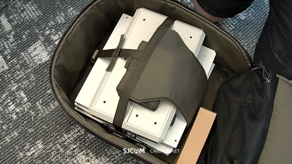
התיק (נשא)
לא נאמר שם. תיק נשיאה עם תא עליון ברוכסן וכיס רשת. הכל ארוז בתוכו.
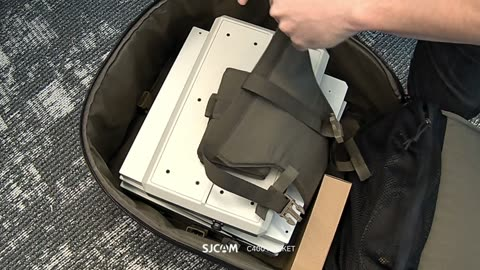
השלט
נאמר: "השלט". מסך מגע בכיס בד זית (בגודל כף יד). על המסך כתוב XCURRENT.
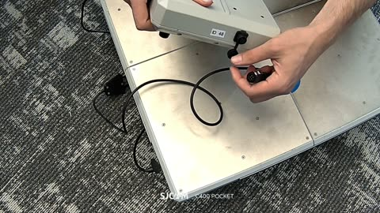
האקספד (XPAD)
נאמר: "האקספד". קופסה אפורה-לבנה עם מדבקה ID 48, מחבר עגול בצד, יציאות ונורת LED ירוקה. לאורך הסרטון הוא האביזר שמחברים אליו הכל.
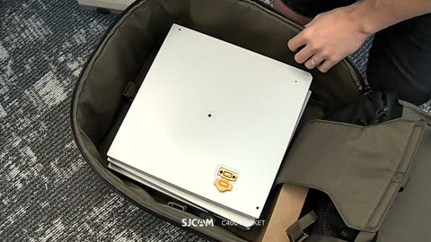
ארבע פלטות
נאמר: "ארבע פלטות". ריבועים לבנים/אפורים זהים, אחד על השני בתיק. בכל פלטה חריץ ושקע.
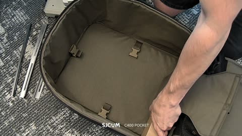
סגלי זווית (פרופילי זווית)
נאמר "סגלי זווית" (תמלול לא ודאי). רצועות מתכת צרות. במסגרת נראות 3 עד 4. מספר מדויק: לא ברור בסרטון.
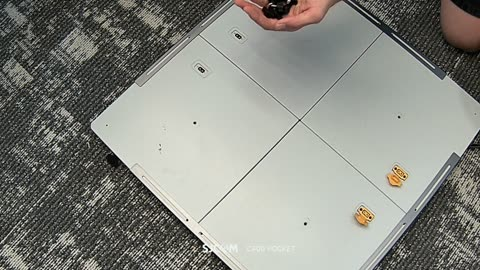
ברגי פרפר
נאמר: "דגי הפרפר" (תמלול לא ודאי). ברגים שחורים עם ראש כנפיים, מחזיק חופן. כמות לא נספרה, נראים כ-8 עד 10.
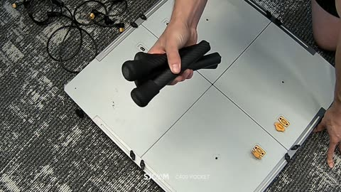
ארבע רגליים
נאמר: "ארבע רגליים". צינורות שחורים עם כפות גומי בקצה.
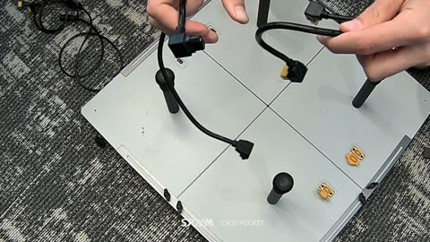
שני כבלי קישור קצרים
נאמר: "שני הקבלים המקוצרים, צהוב אחד ושחור אחד". כל כבל עם מחבר בקצה אחד צהוב/כתום ומחבר שחור זוויתי בקצה השני.
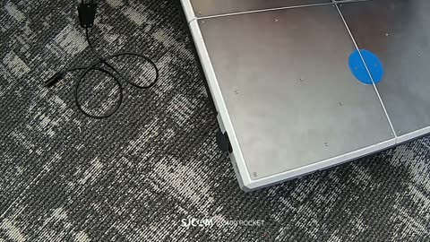
כבל הזנה ראשי
נאמר: "כבל הזנה ראשי שגם מגיע במערכת". כבל שחור ארוך עם קופסית פיצול שחורה, שני תקעים בקצה אחד ומחבר עגול בקצה השני (נראה ב-4:54).
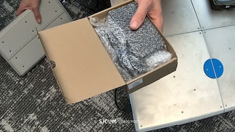
ספק כוח (בקופסת קרטון)
נאמר: "ספק כוח". הקופסה מוצגת עטופה בנייר בועות. הספק עצמו לא נשלף ולא נראה בבירור.
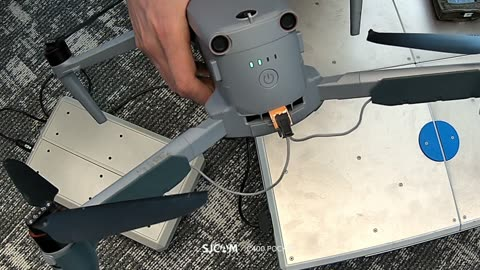
רחפן (להדגמה)
נאמר: "רחפן שהפעלתי אותו מלפני". רחפן אפור עם מחבר כתום בגב, מחובר בכבל אפור. לא ברור אם הוא חלק מהערכה או של המדגים.
2. השלבים לפי הסדר
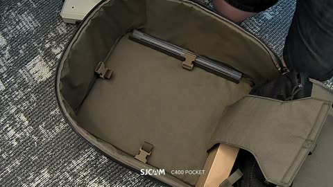
1מוציאים את כל החלקים מהתיק ופורסים על הרצפה.
חלקים: תיק, שלט, האקספד, פלטות, פרופילים, קרטון
הערה: הדיבור בסצנה הזאת (0:00 עד 0:35) הוא רשימת תכולה, לא פעולה.
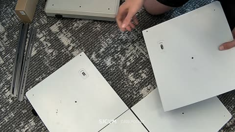
2פורסים את 4 הפלטות כשהצד ההפוך כלפי מעלה, כך שהשקעים והמחברים הכתומים בצדדים הנכונים.
חלקים: 4 פלטות
הערה: הדיבור: בכל צד אמורים לראות שני חיבורים צמודים, רחוק מהמרכז (תמלול חלקי). אצבע מצביעה על השקע (1:36 עד 1:42) ועל המחברים הכתומים.
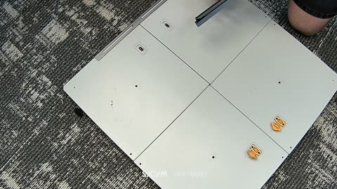
3מניחים 4 פרופילי זווית לאורך קצוות הפלטות.
חלקים: 4 פרופילים (מספר לא ודאי)
הערה: הדיבור מדבר על "מעל כל פינה"; בתמונה הם מונחים לאורך הקצוות. לא ברור בסרטון.
4מבריגים ברגי פרפר שחורים לקצוות הפרופילים כדי לקבע אותם.
חלקים: ברגי פרפר, פרופילים
הערה: פעולה חוזרת בכמה מקומות. ללא כלי, ביד.
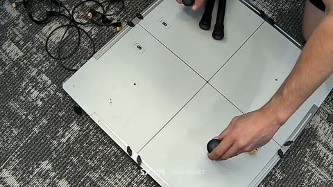
5מכניסים 4 רגליים לחריצים בפינות המשטח.
חלקים: 4 רגליים
הערה: כל רגל מוכנסת בנפרד, אותה פעולה 4 פעמים.
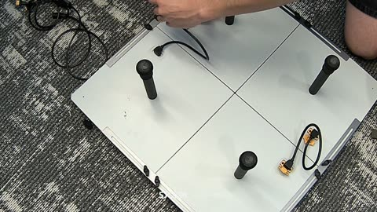
6מחברים שני כבלי קישור קצרים: צהוב לצהוב (מחברים כתומים), שחור לשחור (שקעי השקע).
חלקים: 2 כבלי קישור
הערה: הצהוב נראה מחובר בין שני המחברים הכתומים (4:06). השחור נראה מונח בין שני שקעים שחורים (4:09). הכינוי "שחור/צהוב" מתוך הדיבור.
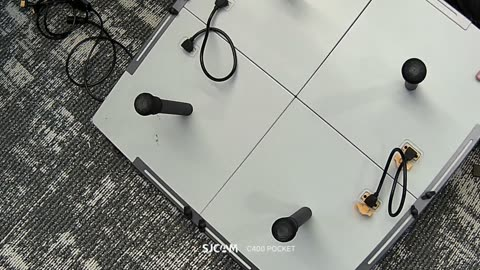
7הופכים את המשטח (הרגליים כלפי מטה).
חלקים: משטח מורכב
הערה: המשטח המורכב הפוך. מופיע עיגול כחול במרכז הצד העליון. תפקיד העיגול לא נאמר.
8מחברים את כבל ההזנה הראשי לשני החיבורים (הקונטקטים) בצד המשטח.
חלקים: כבל הזנה ראשי
הערה: לא ברור בסרטון באיזו שקע בדיוק: ב-4:27 מוצגת שקע עם כיתוב PWR-IN, אבל הפריט שמחזיק אותו אינו מזוהה בוודאות. 4:21 עד 4:36 מוקדשים להזזה והסתרת הכבל.
9מחברים את הקצה העגול של הכבל לאקספד, לוחצים עד קליק.
חלקים: כבל ראשי, האקספד
הערה: הדיבור: "רוצה לשמוע קליק" (תמלול חלקי). הקליק נשמע בסרטון ולא נראה.
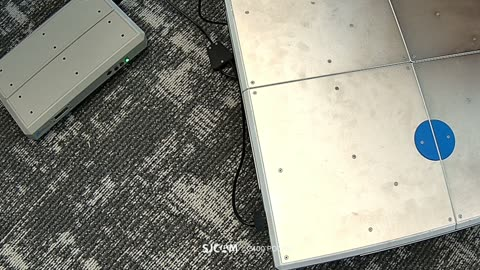
10מניחים את האקספד ליד המשטח ומדליקים אותו: נורה ירוקה נדלקת.
חלקים: האקספד
הערה: ב-5:12 אצבע לוחצת בצד התחתון של האקספד. מיקום הכפתור לא ברור בסרטון. הנורה הירוקה נדלקת ב-5:13 לערך.
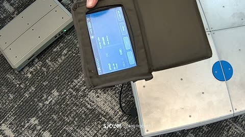
11מדליקים את השלט בלחיצה ארוכה. המסך מציג: State: Idle, XPAD ON, DRONE No drone.
חלקים: שלט
הערה: מקום הכפתור על השלט לא נראה. מופיע גם כפתור הפעלה בפינת המסך. 5:19 עד 5:27 הוא הנחה של השלט וההמתנה לטעינה.
12מציגים את ספק הכוח (נשלף מקופסת קרטון) ואת שקע PWR-IN של האקספד, שאליו מחברים אותו אפילו בזמן פעולה.
חלקים: ספק כוח, האקספד
הערה: חיבור הספק לא מוצג בפועל. נראים רק הקופסה והשקע. לא ברור בסרטון.
13מניחים רחפן פועל על המערכת ומחברים אותו בכבל אפור עם מחבר כתום.
חלקים: רחפן, כבל אפור
הערה: לא ברור לאן מגיע הקצה השני של הכבל האפור.
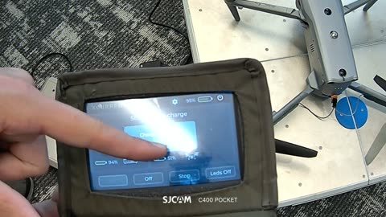
14קוראים את הסטטוס בשלט ומשתמשים בכפתורים On, Off, Stop.
חלקים: שלט
הערה: המסך: State: Drone charge, DRONE ON, Unknown drone, 51%. נפתח חלון Charging Current (6:42). Stop ו-On מוזכרים בדיבור. 6:51 עד 6:54 אגודל על On.
3. כפתורים
| כפתור | איפה | מה הוא עושה | שלב | זמן |
|---|---|---|---|---|
| לחיצה על האקספד (הפעלה) | בצד האקספד, מיקום מדויק לא ברור בסרטון | מדליק את האקספד, נורה ירוקה | 10 | 5:12 (צילום 5:15) |
| שלט: לחיצה ארוכה (הפעלה) | לא נראה איפה בדיוק. נאמר "בלחיצה ארוכה" | מדליק את השלט | 11 | 5:19 עד 5:27 |
| On | מסך השלט, שמאל למטה | מדליק (טעינת הרחפן?). נראה עמום בזמן טעינה | 14 | מוזכר 6:53, אגודל על הכפתור 6:51 |
| Off | מסך השלט, אחרי On | לא נאמר מה הוא עושה. לא ברור בסרטון | 14 | נראה על המסך, לא נלחץ |
| Stop | מסך השלט, אחרי Off | נאמר: "לעצור את הטעינה" | 14 | מוזכר 6:49. לא נראה לחוץ |
| Leds Off | מסך השלט, ימין למטה | לא נאמר. נראה שמכבה נוריות. לא ברור בסרטון | 14 | נראה על המסך, לא מוזכר |
| אייקון הבזק/רחפן במסך | מרכז המסך, ימין | פותח חלון Charging Current עם ערך זרם (לא קריא) | 14 | 6:39 עד 6:42 |
| אייקון הפעלה וגלגל שיניים | פינה ימנית עליונה במסך | לא נלחצים. לא ברור בסרטון | 11, 14 | נראים בלבד |
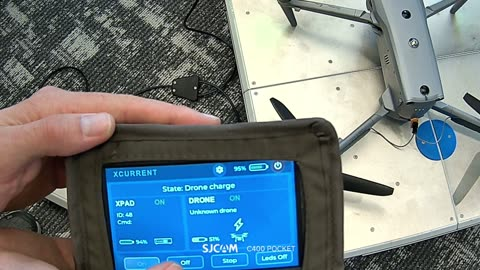
מסך השלט
קראתי: XCURRENT, State: Drone charge, XPAD ON, ID: 48, DRONE ON, Unknown drone, 94% (XPAD) ו-51% (רחפן). ארבעה כפתורים: On, Off, Stop, Leds Off. ערך חלון Charging Current לא קריא.
קראתי: XCURRENT, State: Drone charge, XPAD ON, ID: 48, DRONE ON, Unknown drone, 94% (XPAD) ו-51% (רחפן). ארבעה כפתורים: On, Off, Stop, Leds Off. ערך חלון Charging Current לא קריא.
4. חיבורים
| חיבור | מ | אל | שלב | זמן |
|---|---|---|---|---|
| כבל קישור צהוב | מחבר כתום בפלטה אחת | מחבר כתום בפלטה הסמוכה (יחד 2 מחברים כתומים) | 6 | 4:00 עד 4:06 |
| כבל קישור שחור | שקע שחור שקוע בפלטה | שקע שחור שקוע בפלטה סמוכה | 6 | 3:51 עד 4:12 |
| כבל הזנה ראשי, קצה ראשון | קופסית פיצול עם שני תקעים | שני החיבורים (קונטקטים) בצד המשטח | 8 | 4:36 עד 4:51 |
| כבל הזנה ראשי, קצה שני | מחבר עגול (4 פינים נראים) | שקע בצד האקספד, ליד מדבקת ID 48, עם קליק | 9 | 4:54 עד 5:03 |
| ספק כוח | לא מוצג | שקע PWR-IN בצד האקספד (על פי הדיבור) | 12 | 5:56 (דיבור). לא נראה מחובר |
| כבל רחפן | מחבר כתום בגב הרחפן | קצה שני לא ברור בסרטון | 13 | 6:18 עד 6:27 |
| חיבורים מכניים (לא חשמליים) | 4 פרופילים + ברגי פרפר, 4 רגליים בחריצים | 4, 5 | 2:26 עד 3:42 |
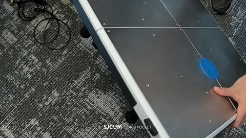
שקע PWR-IN
כיתוב PWR-IN נראה ב-4:27. לא ברור לאיזה פריט הוא שייך. מומלץ לשאול.
כיתוב PWR-IN נראה ב-4:27. לא ברור לאיזה פריט הוא שייך. מומלץ לשאול.
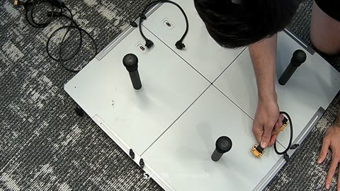
כבל קישור על המחברים הכתומים
4:00, הכבל הצהוב מחובר בין שני המחברים.
4:00, הכבל הצהוב מחובר בין שני המחברים.
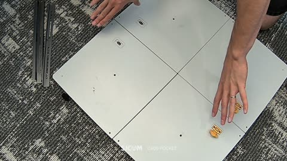
המחברים הכתומים והשקעים בפלטות לפני החיבור
1:42.
1:42.
הפיכת המשטח
4:15, הרגליים כלפי מעלה לפני ההפיכה.
4:15, הרגליים כלפי מעלה לפני ההפיכה.
5. מה אפשר לקצץ
| טווח | למה |
|---|---|
| 0:00 עד 0:35 | רשימת תכולה בדיבור כשהמצלמה על התיק הסגור. תוכן: נחוץ, אבל כתמונת אביזרים אחת, לא כ-35 שניות. |
| 0:36 עד 1:00 | הוצאת הדברים מהתיק, איך הם ארוזים. אפשר לקצר לפריים פתיחה. |
| 1:33 עד 1:52 | הסבר מילולי על סדר הפלטות (איפה השקעים). יידרש חץ אחד או סימון. |
| 2:36 עד 2:57 | הברגה חוזרת בכל פינה. מספיק צילום אחד וסימון x4. |
| 3:15 עד 3:42 | הכנסת 4 רגליים אחת אחרי השניה. מספיק צילום אחד וסימון x4. |
| 4:21 עד 4:36 | הזזת המשטח והכבל לפני החיבור. |
| 5:15 עד 5:21 | המתנה לנורה. |
| 5:36 עד 6:12 | קופסת הספק והבועות. 36 שניות של הצגה בלי חיבור בפועל. |
| 6:30 עד 6:57 | הסבר על המסך. נשאר רק צילום מסך אחד עם תיוג. |
6. הערכת היקף להצעת מחיר
- סצנות להמחשה: כ-15 עד 17. פתיחה עם אביזרים (1), כ-12 צילומי שלבים (שלבים 1 ו-2 ניתנים לאיחוד, שלב 12 אופציונלי), מסך השלט (1 עד 2), וסיום.
- זמן מסך: בגרסת 1 עד 2 דקות, כ-6 עד 8 שניות לסצנה.
- אלמנטים חוזרים: רגליים x4, ברגים x4, פלטות x4: צילום אחד עם סימון.
- מסך השלט: 3 מצבים: Idle, Drone charge, חלון Charging Current.
חומרים שנדרשים מהלקוח:
- תמונות מוצר נקיות או מודלי תלת מימד: פלטה, פרופיל זווית, רגל, ברג פרפר, XPAD (כל הצדדים), שלט עם כיס, כבלי קישור, כבל ראשי, ספק כוח.
- לוגו XCURRENT ופלטת צבעים.
- שמות חלקים רשמיים ומק"טים, וסוגי מחברים (נראה צהוב/כתום ושחור, לא זוהה).
- צילומי מסך מהשלט בכל מצב, ברזולוציה מלאה.
- מיקום הכפתור בשלט ובאקספד.
- רשימת כמויות מאושרת: פרופילים, ברגים, רגליים, כבלים.
7. שאלות פתוחות לחיים
- מה השמות הרשמיים של: פרופילי הזווית, ברגי הפרפר, כבלי הקישור, כבל ההזנה הראשי? והאם הם 4 פרופילים בדיוק, ומה כמות הברגים?
- איפה בדיוק נמצא כפתור ההפעלה של ה-XPAD ושל השלט?
- ל-PWR-IN שמוצג ב-4:27 ולזה שב-5:56: של איזה פריט?
- איך ספק הכוח מתחבר ולמה הוא נחוץ ("גם תוך כדי הפעלה")? מה צריך להיות מוצג?
- הכבל האפור עם המחבר הכתום של הרחפן: לאן מתחבר הקצה השני? האם הוא חלק מהערכה? איזה רחפן?
- מה עושים הכפתורים Off ו-Leds Off, ומה בדיוק עושים Stop ו-On?
- מה העיגול הכחול על המשטח, ומה הערך שמוצג בחלון Charging Current?
- האם התיק (וסידור הארגון בתוכו) נכלל בגרסה הקצרה?
- האם נדרש טקסט על המסך, ובאיזו שפה?